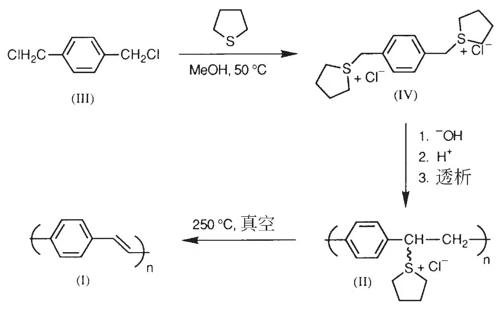
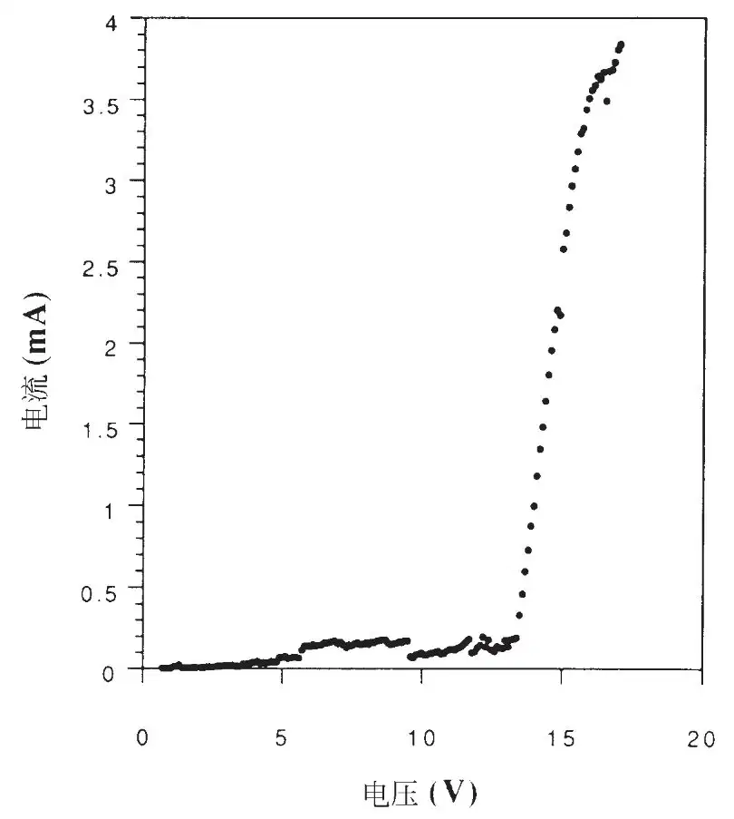
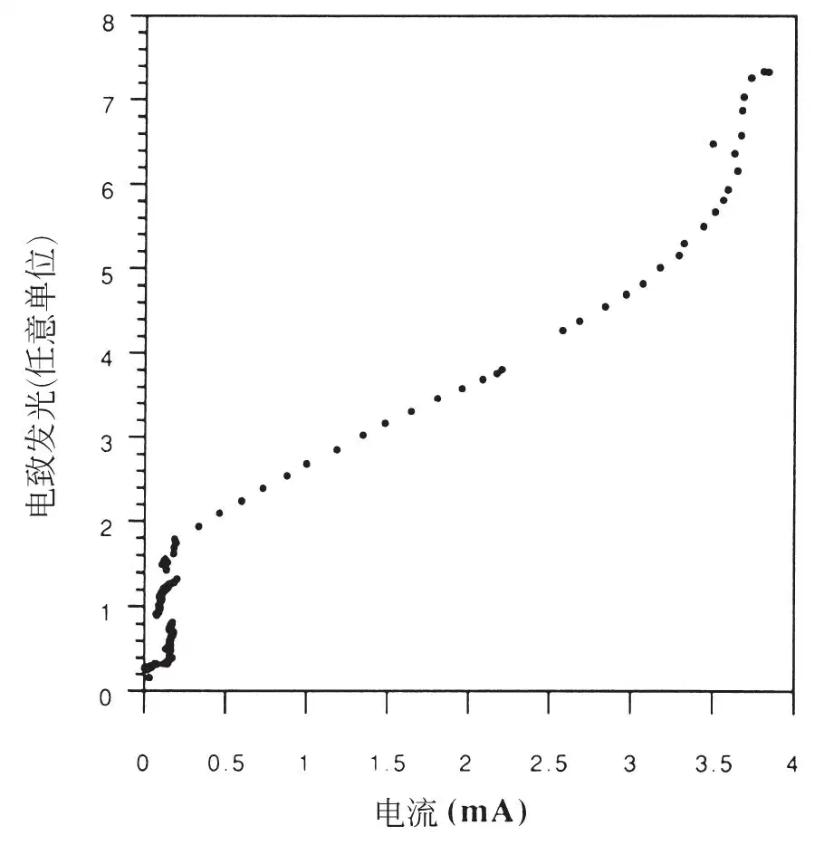
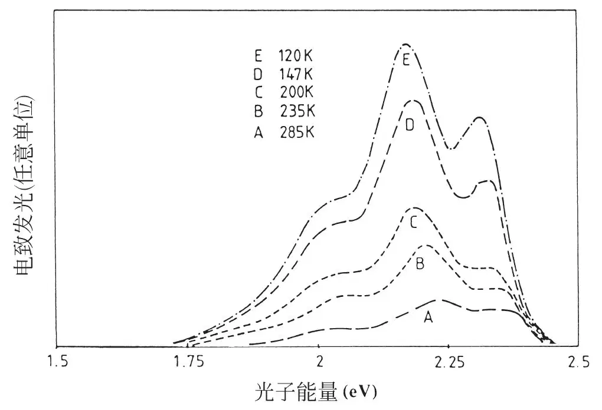

英文
英文伯勒斯等
编者按
20世纪70年代发现了导电聚合物，几种具有半导体电性能的有机聚合物被随后的研究所证实。其中之一的聚对苯撑乙烯（PPV）是由剑桥大学的理查德·弗兰德及其同事们制备的，它可被用在聚合物发光二极管（LED）中，当有电流通过时该器件发出淡黄色的光。对于传统的无机LED来说，若想得到新的发光颜色需要新的材料。但是，聚合物LED的发光波长可以通过对聚合物骨架进行化学修饰来调节，器件的发射光谱覆盖整个可见光谱区，现在它们被用作商业发光显示器的原型器件。可以采用低成本的印刷工艺制作全塑料的聚合物LED，它能像纸一样卷起。 英文
共轭聚合物是有机半导体，其半导体性能与沿聚合链离域的π分子轨道有关。与非聚合物的有机半导体相比，共轭聚合物的主要优点是它的可加工性，能形成有用而又耐用的结构。聚合物对电激发的响应是非线性的，在共轭链上注入一个电子和一个空穴能够形成一个自局域激发态，随后它能够以辐射方式衰减，这就表明可以在电致发光器件中应用这些材料。这里我们要论述的聚对苯撑乙烯，是通过它的前驱体溶液进行加工而获得的，它被用作大面积发光二极管中的活性成分。该聚合物具有良好的结构性质，制备简单，在光谱中的绿–黄光波段有相当高的发光效率，这些优点使该聚合物能够用于发展大面积发光显示器。 英文
人们对于固态发光器件的发展保持着长久的兴趣。诸如砷化镓等直接带隙无机半导体能实现有效发光，但是将它们用于大面积显示器既不容易也不经济。基于此，已发展出基于多晶硫化锌的体系，但效率低和可靠性较差等缺点使其不宜进行大规模生产。由于有机分子半导体普遍具有高的光致发光量子效率，长期以来，人们一直在关注利用这些有机半导体在外加强场条件下通过电荷注入而发光（电致发光）的可能性[1-7]。发光器件是通过有机层的真空升华而制成的，尽管它的发光效率很高且发光颜色选择范围很大，但是通常存在着这样的问题：升华而得到的有机薄膜的长期稳定性不够强，导致其易于发生重结晶和其他结构性变化。 英文
改善这些有机层的结构稳定性的一种方法是从分子材料转向大分子材料，而共轭聚合物就是一个好的选择，因为从原理上讲，它们不仅能提供良好的电荷传输并能为发光提供高的量子效率。对于共轭聚合物的极大兴趣一直集中于它们作为导体材料的性质上，这些性质通常是通过大量的化学掺杂来实现的[8]，而它们的发光现象极少引起人们的注意。出现这种情况的一个原因是它们中被广泛研究的聚乙炔只呈现出很弱的光致发光。但是，那些具有较宽半导体能隙并且可以制备成十分纯的形式来控制其在缺陷位处的激发态非辐射衰减的共轭聚合物，能够表现出高光致发光的量子效率。其中，聚对苯撑乙烯（PPV）能很方便地制成高质量的薄膜，并且在一个以2.2 eV为中心的带显示出很强的光致发光，刚好低于从π到π*的带间跃迁的阈值[9,10]。 英文
我们利用一种可溶液加工的前驱体聚合物（II）合成了PPV（I），如图1所示。该前驱体聚合物制备起来很方便，是由α,α′–二氯对二甲苯（III）通过锍盐中间产物（IV）的聚合[11-13]得到的。在碱性条件下的水/甲醇混合物中进行聚合。反应终止后，对反应混合物进行蒸馏水透析。除去溶剂，将前驱体聚合物重新溶于甲醇中。我们发现对于在适当基质上旋涂制备前驱体聚合物薄膜来说，甲醇是一种好的溶剂。经过热转化之后（典型条件是≥250 ℃，真空中持续10小时），形成的PPV薄膜（典型厚度为100 nm）是同质、致密而均匀的。此外，该薄膜坚固而无延展性，在室温下时空气中以及温度>300 ℃时在真空中都是稳定的[11]。 英文

图1．PPV的合成路线 英文
用于进行电致发光研究的器件的制备过程如下：先在适当基底（例如玻璃）上沉积一个底部电极，之后在该电极上形成PPV薄膜，最后在全部转换的PPV薄膜上形成顶部电极。对于负的电子注入接触，我们使用低功函材料；而对于正的空穴注入接触，我们使用高功函材料，其中至少有一层对于与器件平面正交的发光必须是半透明的。为此，我们同时使用了通过离子束溅射法沉积的氧化铟[14]和薄层的铝（典型厚度为7~15 nm）。我们发现暴露在空气中的铝能够形成薄的氧化物覆盖层，金和氧化铟都能被用作正电极材料，而铝、镁银合金和通过射频溅射所制得的非晶硅氢合金都适合作负电极材料。PPV薄膜的高度稳定性使顶部接触层的沉积很容易实现，因而我们可以利用金属的热蒸镀法和氧化铟的离子束溅射法形成这种接触。 英文
图2和图3体现出以氧化铟作为底部接触且以铝作为顶部接触的器件的典型特性。大量电荷注入的阈值正好低于14 V，对应的电场强度为2×106 V·cm–1，积分光输出随电流的变化近似为线性的。图4给出了电致发光器件在不同温度下的光谱分辨输出，其光谱与光致发光谱非常类似，在2.2 eV附近存在峰值，且清晰的声子结构[9,10]。这些器件发出光谱中的绿–黄光波段的光，而且在正常的实验室光照条件下很容易被看到。量子效率（每注入一个电子所发出的光子类）适中，但是没有某些利用分子材料制成的结构所报道的那样高[2-7]。我们的PPV器件的量子效率达到0.05%。我们发现这些器件中的失效模式通常都与聚合物/薄金属界面处的失效有关，这可能是因为那里的局部焦耳热引起的。 英文

图2．PPV薄膜电致发光器件的电流–电压特性图。PPV薄膜厚度为70 nm，发光面积为2 mm2，底部接触为氧化铟，顶部接触为铝。图中显示的是正向偏置状态的曲线（氧化铟相对于铝电极为正）。 英文

图3．电致发光器件的积分光输出与电流的关系图（该器件的电流–电压特性曲线如图2所示） 英文

图4．电致发光器件在不同温度时的光谱分辨输出 英文
观测和描述该共轭聚合物中电致发光现象是对这类半导体基本的激发过程进行研究的兴趣所在。这里，电子体系中非线性响应的自局域带电或中性激发态概念已成为一个有用的概念。对于具有像PPV一样对称性的聚合物，这些激发是极化子，或者是不带电荷的（如极化激子）或者是带电荷的（带单个电荷的极化子，以及带两个电荷的双极化子）[15,16]。之前我们将这种聚合物中的光致发光归因于由链间激发形成的单重态极化激子的辐射复合[9,10]，而考虑到这里有同样的辐射光谱，我们将电致发光归结为相同激发态的辐射衰减。但是电致发光是由器件的相反两边注入的电子和空穴复合而产生，我们必须考虑电荷载流子是什么。之前我们已经注意到双极化子是指在光致激发与化学掺杂研究中更为稳定的带电激发，它们是极强的自局域的，伴随着双极化子能级向半导体带隙深入运动，彼此间在1 eV之内[9]。相反，对于中性极化子激子来说，根据单电子模型这些能级向能隙的移动程度与双极化子的相同[15]，由光致发光直接测得的能级移动是很小的，并且保持着超过2.2 eV的间隔。那么对于电致发光来说，双极化子不可能是使极化激子得以形成的电荷载流子，因为它们的产生需要两个电荷载流子的结合，它们的迁移率很低，而且明显出现在能隙状态所处位置的双极化子的强自局域，可能没有给在这里测得的光子能量留下足够的能量进行辐射衰减。因此，参与其中的载流子可能是极化子。关于它们能够结合而形成极化激子的这一证据，要求极化子能隙状态向能隙的运动不超过极化激子的，从而可以解释为什么无法观测到与极化子有关的光跃迁。 英文
PPV的光致发光量子效率估算约为8%。研究表明[10,17]：无辐射跃迁过程限制光致发光中测得的辐射衰减效率，该无辐射过程是来自于激发态向作为无辐射复合中心的缺陷位点的迁移；而在高强度时，该无辐射过程还可归结为激发态对之间的碰撞。这些过程原则上是能够通过聚合物的设计来控制的，因此在一系列电致发光应用中发展这类材料具有极大的可能性。 英文
（王耀杨 翻译；于贵 朱道本 审稿）